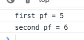
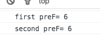
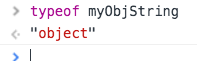
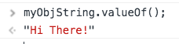
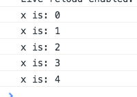
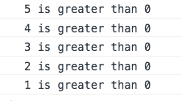
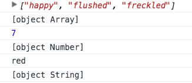

Tuts+ JS Fundamentals Ch6: Data-types
Truthy and Falsey
Data-types
Difference between composite data-types
The 6 Falsey Values are:
false
0
''
null
undefined
NaN
Note: Nan does
not equal NaN
We use isNan(); to check for is not a number.
** QUICK QUIZ **
What are the 5 primitive types?
REMEMBER "NO SWEET BUNS!" --- "NO SWEET BUNS!"
Number, String, Boolean
ALSO "UNs are UNIQUE!"
Undefined, Null (SPECIAL data types)
AOs types "Hey-o-oh!"
Arrays, Objects (COMPOSITE data types)
One difference between composite data-types
Arrays are containers for multiple values
Objects are containers for key-value pairs
Tuts+ JS Fundamentals Ch7: Operators
Prefix Mode vs Postfix Mode
Postfix:
The expression returns the value, then increments it.
var postfix = 5;
var prefix = 5;
console.log("first pf = " + postfix++);
console.log("second pf = " + postfix);

Expressions returns a different num
than the actual value that has been
incremented
The prefix variables do NOT suffer from this subtle issue.
console.log("first preF= " + ++prefix);
console.log("second preF= " + prefix);

The value is incremented or
decremented, and THEN returned.
This confusion leads to off-by-one errors that are never fun. :(
So, avoid them wherever possible.
Of course there is addition assignment:
counter+= 2;
But there's also:
Multiplication Assignment : counter*= 4;
Division Assignment: counter/= 6;
Modulus Assignment: counter%= 4; COOL! --Who Knew?
1 == true;
// true
1 === true;
// false!
What's going on?
Type coercion.
No type coercion takes place in strict equality comparison.
console.log(2 > "1");
// true
console.log(2 > "Hello!");
// false
Why? Because
if the str value can be interpreted as a number
it will be. If not, it will be the value NaN
The true result of the second line of code is
NaN. And 2 is not greater than NaN
Tuts+ JS Fundamentals Ch#9 Operators (cont.)
what does
+true;return?
//
1
typeof true; ?
//
boolean
typeof []?
//
object
typeof null?
//
object
This is due to a bug
and is maintained for
backwards compatibility
This will blow your mind.
true && 1
//
1
Interprets the last operand
true && false
//
false
Interprets the last operand
!1
//
false
I don't know why
!(true && 1)
//
false
Interprets the last operand
!!(true && 1)
//
true
!! converts it to a true boolean
false && false
//
false
The first operand is evaluated.
If false, the operation is aborted and returns "false".
This is called "short-circuiting"
The comma IS an operator!
console.log('compound operator'), 5 + 5;
// compound operator
// 10
This is uncommon.
Only the last operation is evaluated
alert('Look Down!'), 600 + 100
alert executes and 700 appears
after clicking OK.
Tuts+ JS Fundamentals Ch#10 Objects
In Wiley, we learned to distinguish Literals from Constructors
Arrays:
var msgParts = new Array[]; --"Array Constructor"
var msgParts = []; --"Array Literal Notation"
Objects:
var car = new Object();--"Object Constructor"
car.engine = "V8";
car.topSpeed = "195mph";
var car = { -- "Object Literal"
engine: "V8",
topSpeed: "195mph",
getFacts: function() {
return this.engine + " : "+ this.topSpeed;
}
};
Strings are commonly created as "string literals".
var myLitString = "Hi There!";--"String Literal"
But in truth, .js treats this as an object when we 'operate' on it with methods.
We can create this string as an object as well!
var myObjString = new String("Hi There!");
(string created with a "String Object Constructor")
simply entering the variable myObjStr returns:
String {0: "H",
1: "i",
2: " ",
3: "T",
4: "h",
5: "e",
6: "r",
7: "e",
8: "!",
length: 9,
[[PrimitiveValue]]: "Hi"}
typeof returns: 
myObjstr.valueOf(); returns: 
Anyway, it is very inadvisable to create primitives in this way.
Tuts+ JS Fundamentals Ch#11 Functions
Function Expressions
Function Hoisting
function funky(base, drums) {
if (base && drums) {
alert("Get down, get funky");
} else {
alert("Sorry. You can't get down, get funky.");
}
This form of defining a function is called...
A "Function declaration"
The (base, drums) params of the function "funky" are called
"The Function Signature"
This is the ORDER and AMOUNT of args that a function takes.
var myFunk = function() {
alert("Get down, get funky");
}
A function placed upon a variable is called:
A function expression
These are incredibly useful in "Function Hoisting".
FUNCTION EXPRESSIONS ARE NOT HOISTED!
The be clear:
var fun = function() {
return "this is fun!";
}
"fun" is the name of the
Variable & not the name of the function itself.
How is this function invoked?
fun();
Variables are processed before any other lines of code.
Therefore, variables in the middle of a function body are "visible" at
top of the function.
Javascript "Hoists" variables to the top of the scope.
Let's take a look:
console.log(sayHi);
var sayHi = "Hi";
This returns:
Yes, it knows of the variable but has no value to provide.
(When no variable is known, it gives us an error.)
console.log(undeclaredHi);
This returns: // Uncaught reference error...
We can also define functions so they fire automatically
This is done by:
Wrapping them in parentheses
(function youRock() {
alert("You Rock!");
})();
--The () are needed to fire this self-invoking function
You can do THE SAME THING if you prepend a UNARY OPERATOR to the function.
You WONT need parentheses!
!function youRock() {
alert("You Rock!");
}();
You will need the () to fire the function though.
This second format is known as...
"Leading BANG syntax"
These are often used when devs wish to take advantage of
Javascript's ASI ("automatic semi-colon insertion").
This is subject of much debate.
Tuts+ JS Fundamentals Ch#12: Scope
Properties of window
.href
.location
"Leaky Code"
window.location;
returns
Location {hash: "", search: "", pathname: "/tuts%2BjsFun/tutsPlusJsFundamentNotes.html", port: "8080", hostname: "127.0.0.1"…}
window.location.href;
returns
"http://127.0.0.1:8080/tuts%2BjsFun/tutsPlusJsFundamentNotes.html"
href = "Hypertext reference" it can be
-a relative URL,
-an absolute URL,
-a target within a page or
-a script (like href="javascript:alert('Hello');")
location = a window object that contains information about the URL
Leaky code
Code that creates variables in the global scope.
This is avoided by wrapping all of our variables in an immediately invoked function
Tuts+ JS Fundamentals Ch#13: this
'use strict';
this located in a custom object
this located in a constructor function
'use strict';
--throws silent errors
--prevents accidental creation of globals (when omitting
var)
Here is a function as a constructor
function Person(name) {
this.name = name;
}
var susan = new Person("Susan");
alert(susan.name);
susan here is an instance of the Person object
1) If
this is inside of a method that is part of a custom object...
var car = {
color: "red",
sound: function() {
this.horn = "vroom!";
return this.horn;
}
}
console.log(car.color); // red
console.log(car.sound()); // honk!
Then,
this points to the custom object
2) If
this is inside of a constructor function...
function Person(name) {
this.name = name;
}
var bob = new Person("Bob");
document.write(bob.name); // Bob
This points to the instance created by the function
What to remember when you get [object Object]
var shape = {
kind: 'triangle',
color: 'green',
size: 'medium',
animation: 'none'
};
document.write(shape) gives us: [object Object]
Basically, the spec says create a string like the following:
"[object " + InternalClassName + "]"
InternalClassName is the native constructor for the object, "Object" in your case.
The first is lowercase because the spec says use that string, the second is upperCase because that is the name of the native constructor.
Tuts+ JS Fundamentals Ch#14 ternaries
Ternary operator
"Ternary" - Comprised of three parts.
Ternary is a special operator that takes 3 operands:
expression to evaluate ? if true : if false
20%2 === 0 ? alert("even") : alert("odd");
var x = 4;
var y = 2;
x - (y * y) ? alert("Positive!") : alert("Zero or Less!");
// Zero or Less!
Ternaries are really convenient to put code onto one line.
They can reduce readability, however, and should be used with caution.
Tuts+ JS Fundamentals Ch#15: Switch Statements
Switch Statements
break;
function translate(word) {
switch (word) {
case 'hello':
console.log("Bon Jour!");
break;
case 'brother':
console.log("Frere");
break;
case 'Wonderful':
console.log("Formidable!");
break;
default:
console.log("Hmm. Dunno " + word);
break;
}
}
translate("hello"); // Bon Jour!
Tuts+ JS Fundamentals Ch#16 & Ch#17: Loops
for
for in
while
do while
.hasOwnProperty();
The for loop
var weeks = ['mon', 'tues', 'wed', 'thur', 'fri'];
for (var x = 0; x < weeks.length; x++) {
console.log(weeks[x] + ". ")
}
// mon. tues. wed. thur. fri.
var shape = {
kind: 'triangle',
color: 'green',
size: 'medium',
animation: 'none'
};
for (var prop in shape) {
console.log(shape[prop]);
}
It's important to filter out all of the built-in key-value pairs and meta-information about an object.
NB: "Functions have prototypes. Objects have __proto__ s."
We should ALWAYS perform a check inside the block
if(object.hasOwnProperty(prop)) {
// body of loop
}
So-- Properly written...
for (var prop in shape) {
if (shape.hasOwnProperty(prop)) {
console.log(shape[prop]);
}
}
2 More Loops
while loop
do while loop
The while loop
var limit = 4;
while (x <= limit) {
console.log("x is: " + x);
x++;
}

The first expression WHETHER TRUE OR FALSE always runs the loop
The do while loop
var x = 5;
var y = 0;
do {
console.log(x + " is greater than " + y);
x--;
} while (x > y);

Tuts+ JS Fundamentals Ch#20 Timers
setTimeout
setInterval
clearTimeout
clearInterval
When using setTimeout Never pass a string for opsec reasons
setTimeout(function(){ alert("Seven"); }, 7000);
Here we're passing a function name as 1st argument.
function ouch() {
alert("ouch!");
}
setTimeout(ouch, 7000);
Note there is no "()"--just the name
If you want to pass args to the function...Use a function expression!
Using a function expression & passing args to the function
var ouch = function(reason) {
alert("ouch!" + reason);
}
setTimeout(function() {
ouch("--that's HOT!");
}, 7000);
setInterval has identical syntax and simply repeats itself
So, how to we stop a
setInterval or a
setTimeout ?
clearTimeout
clearInterval
Here, we have a simple setInterval:
'use strict';
function heartBeat() {
console.log("thump, thump");
}
setInterval(heartBeat, 2000);
1) We set up a timer with
setInterval();
2) Increment that sucker within the function.
3) Set up an if condition.
4) Insert
clearInterval feeding it an
identifier for the interval--done.
var counter = 0;
function heartBeat() {
console.log("thump, thump");
counter+= 1;
if (counter === 10) {
clearInterval(interval);
}
}
var interval = setInterval(heartBeat, 2000);
You can also put an if statement if (x === 1){break;} to stop it.
Tuts+ JS Fundamentals Ch#22: Working with Strings
Type coercion
String Properties & Methods
length; (property)
split();
indexOf();
lastIndexOf();
toUpperCase(); toLowercase();
substring();
trim();
A "string literal" is coerced, by javascript, into "wrapper objects" so as to access properties or methods on that string literal.
This is true for all primitives.
[remember: "No Sweet Buns"] Nums, Strings, Booleans
.length();
var feeling = "I feel wonderful!";
How many characters?
feeling.length;
// 17
.split();
var feeling = "I feel wonderful!";
String into an array.
feeling.split(" ");
// ["I", "feel", "wonderful!"]
Because we used the " " to split on, we separated the words
.indexOf();
var feeling = "I feel wonderful!";
Find a string within this string
feeling.indexOf("w");
// 7
Note: This finds the FIRST OCCURENCE of the character.
NB: indexOf() can take a second arg indicating
the startpoint of the search.
feeling.indexOf("e", 4);
(if not found, it returns // -1 --which is falsey)
.lastIndexOf();
var feeling = "I feel wonderful!";
Find a string within this string
feeling.lastIndexOf("l");
// 15
Note: This finds the LAST OCCURENCE of the character.
NB: indexOf() can take a second arg indicating
the startpoint of the search.
feeling.lastIndexOf("e", 2);
(if not found, it returns // -1 --which is falsey)
.toUpperCase(); / .toLowerCase();
var feeling = "I feel wonderful!";
Convert to caps
feeling.toUpperCase();
// I FEEL WONDERFUL!
.substring();
var feeling = "I feel wonderful!";
select a portion of the string
feeling.substring(2, 6);
// feel
2nd arg must be after last desired letter
"I feel wonderful!"
feeling.substring(7, 13);
Only one arg specifies startpoint and goes to the end.
.slice();
var feeling = "I feel wonderful!";
Alternate way to select part of a string
feeling.slice(7);
// wonderful!
With one argument, this works the same as .substring();
feeling
.slice(7, 13);
// wonder
With two args it's function is identical to .substring();
The magic of .slice();
Selection begins at the end of the string with negative numbers
"I feel wonderful!"
feeling.slice(-10, -4);
.trim();
var feeling = " I feel wonderful! ";
delete spaces
feeling.trim();
// I feel wonderful!
NB:Trim is simple:
It just snips off the spaces at both ends of a string
Tuts+ JS Fundamentals Ch#24: Arrays
Mutator Methods vs. Accessor Methods
push();
unshift();
pop();
shift();
splice();
reverse();
sort();
indexOf()
join();
slice();
Mutator Methods change the underlying Array Permanently
Accessor Methods change nothing
var mean = ["Mongo", "Ember", "Angular", "Node"];
.push();
add to the end
mean.push("Gulp");
console.log(mean);
// ["Mongo", "Ember", "Angular", "Node", "Gulp"]
.unshift();
add to the start
mean.unshift("Sass");
console.log(mean);
// ["Sass", "Mongo", "Ember", "Angular", "Node"]
.pop();
clip last
mean.pop();
console.log(mean);
// ["Mongo", "Ember", "Angular"]
.shift();
clip first
mean.shift();
console.log(mean);
// ["Ember", "Angular", "Node"]
.splice();
replace or erase items from the Array
One argument removes all starting at the index
mean.splice(2);
console.log(mean);
// ["Mongo", "Ember"]
2nd arg is number of items to remove
mean.splice(2, 1);
console.log(mean);
// ["Mongo", "Ember", "Node"]
3rd arg is items to insert
mean.splice(2, 1, "Grunt", "React", "Greensock");
console.log(mean);
// ["Mongo", "Ember", "Grunt", "React", "Greensock", "Node"]
.reverse();
reverse Array
mean.reverse();
console.log(mean);
// ["Node", "Angular", "Ember", "Mongo"]
.sort();
sort Array alphabetically
mean.sort();
console.log(mean);
// ["Angular", "Ember", "Mongo", "Node"]
All the quirks of UNICODE apply to sort(); so results may vary.
This includes numbers as well as lower case v. uppercase letters.
var nums = [60, 7, 1000, 50];
console.log(nums.sort());
// [1000, 50, 60, 7]
Dan Wellman refers to this as the "comparison function".
var nums = [60, 7, 1000, 50];
nums.sort(function(a, b) {
if (a < b) {
return -1;
} else if (a === b){
return 0;
} else {
return 1;
}
});
console.log(nums);
Accessor Methods
.join();
Array to a string
mean.join();
console.log(mean);
// ["Mongo", "Ember", "Angular", "Node"](!)
Remember: accessor methods make temporary modifications
So...
console.log(mean.join());
// Mongo,Ember,Angular,Node
.indexOf(); / .lastIndexOf();
Find the index of a member of the array
mean.indexOf("Ember");
console.log(mean);
// ["Mongo", "Ember", "Angular", "Node"](!)
Remember: accessor methods make temporary modifications
BUT...
console.log(mean.indexOf("Ember"));
// 1
.slice();
one arg specifies the index to start slicing from (inclusive)
mean.slice(2);
console.log(mean);
// ["Mongo", "Ember", "Angular", "Node"](!)
Remember: accessor methods make temporary modifications
BUT...
console.log(mean.slice(2));
// ["Angular", "Node"]
Negative slice nums count backwards & slice to the end.
console.log(mean.slice(-2));
// ["Angular", "Node"]
2 args: sliced portion ends at the second arg exclusive
console.log(mean.slice(-3, -1));
// ["Ember", "Angular"]
Slice Quiz:
["Regex", "is", "clearly", "the", "work", "of", "Satan"];
console.log(regex.slice(3));
// ["the", "work", "of", "Satan"]
console.log(regex.slice(-5, -2));
// ["clearly", "the", "work"]
console.log(regex.slice(-3));
// ["work", "of", "Satan"]
console.log(regex.slice(4));
// ["work", "of", "Satan"]
console.log(regex.slice(0, -3));
// ["Regex", "is", "clearly", "the"]
Bonus Round:
poem = ["Chin", "up!", "You'll", "drown", "a", "little", "slower."];
What 4 ways could I slice just the word "drown"?
slice(+arg, +arg) - poem.slice(3, 4);
slice(+arg, -arg) - poem.slice(3, -3);
slice(-arg, -arg) - poem.slice(-4, -3);
slice(-arg, +arg) - poem.slice(-4, 4);
Tuts+ JS Fundamentals Ch#24
Array Iterator Methods
forEach();
every();
filter();
some();
map();
reduce();
reduceRight();
var joke = ["two", "foos", "walk", "into", "a", "var"];
.forEach();
template
iterate through each item
joke.forEach();
// two is at 0 of two,foos,walk,into,a,var
// foos is at 1 of two,foos,walk,into,a,var
// walk is at 2 of two,foos,walk,into,a,var
...
Anon func inside of forEach() takes 3 things:
It 'knows' the value,
the index
and the entire array.
So, again...
joke.forEach(function(value, index) {
console.log(index + " is " + value);
});
// 0 is two
// 1 is foos
// 2 is walk...
* A second argument for Obj to be used as its 'this' object inside the callback function
I don't yet, understand this-9/16
.every();
Do all items in an Array satisfy a certain condition?
var newJoke = ["two", "foos", "walk", "into", 1, "var"];
newJoke.every(function(value, index) {
return typeof value === 'string';
});
// false
for every(); As soon as it returns a Falsey value,
the method returns false
Like forEach(), the callback inside of .every() is passed the same 3 args.
1. value
2. index
3. entire Array
.some();
Do any items in an Array satisfy a certain condition?
var newJoke = ["two", "foos", "walk", "into", 1, "var"];
newJoke.some(function(value, index) {
return typeof value === 'string';
});
// true
for some(); As soon as it returns a Truthy value,
the method returns true
.filter();
Return an array (from this array) and filter out the crap!
var notAllCrap = ["icecream", "crap", "money", "crap", "friendship", "crap"];
notAllCrap.filter(function(value) {
return value !== 'crap';
});
// ["icecream", "money", "friendship"]
for
.filter(); As with others...
The callback is passed three things:
1) index
2) value
3) entire array.
It ALSO has the optional second arg within the method that determines
this!
.map();
Let's iterate and modify each item of an array
var joke = ["two", "foos", "walk", "into", "a", "var"];
joke.map(function(value) {
return value.toUpperCase();
});
// ["TWO", "FOOS", "WALK", "INTO", "A", "VAR"]
The underlying Array is left unchanged.
This .map() method returns a new array.
.reduce();
Return an array that performs math on all items in an array as operands
var evens = [2, 4, 6, 8, 10];
evens.reduce(function(total, value) {
return total+= value;
});
// 30
the callback for .reduce(); can take up to four arguments
1) total
(this is really the return val from previous func call--the running total)
2) value
(current array item)
3) index of the item
3) source array
*The first arg (
total above) has no value when it starts.
We can manipulate this by adding a second arg TO THE METHOD.
🔥Quiz Time💥
When operating on values of keys in properties...
How do you tell the difference between an Array & an Object?
The
typeof operator returns
object for both Arrays & Objects.
BEFORE YOU SCROLL DOWN!
Methods exist on the Object.prototype (HINT!)
that can be invoked to return the name (category) of the data-type of the value of each key
The answer is:
console.log(
Object
.prototype
.toString
.call(<object.property>)
);
var woman = {
face: ["happy", "flushed", "freckled"],
height: 7,
nose: "red"
};
woman.face;
Object.prototype.toString.call(woman.face);
woman.height;
Object.prototype.toString.call(woman.height);
woman.nose;
Object.prototype.toString.call(woman.nose);
console.log these and you get this:

So... again...
Object.prototype.toString.call();
Tuts+ JS Fundamentals Ch#25 working with Instances of Objects
Instance Methods and properties that are automatically inherited
constructor;
hasOwnProperty();
propertyIsEnumerable();
toString();
var pizza = {
crust: "thick",
toppings: ["pepperoni", "mushrooms"],
size: "large"
};
constructor;
"What constructor function that created this object?"
console.log(pizza.constructor);
(The Object constructor) capital "O"
Objects, Arrays, Strings, Numbers also have this property.hasOwnProperty();
"Does
myObject have a
prop as a defined own property?"
console.log(pizza.hasOwnProperty("toppings"));
console.log(pizza.hasOwnProperty("constructor"));
constructor is inherited from the prototype chainisEnumerable();
"Does
myObject have a
prop that I can iterate over
with a
for in loop?"
console.log(pizza.propertyIsEnumerable("size"));
console.log(pizza.propertyIsEnumerable("constructor"));
// false
console.log(pizza.hasOwnProperty("toppings"));
"own", defined properties are Enumerable by default
(bools, Nums, str, etc.)All objects inherit a toString() method that returns
a string representation of the object.toString();
"Computer! Give me a string representation of
myObject!"
console.log(pizza.toString());
[objectObject]
This tells us that the object is an object
and that it "extends" the Object constructor
If we called this on an Array...
console.log(["how","are","you?"].toString());
Nice, but is it a string or array or object⁉️
var pt = Object.prototype.toString.call(pizza.toppings);
console.log(pt);
[objectArray]
This tells us that the object is an object
and that it "extends" the Array constructor